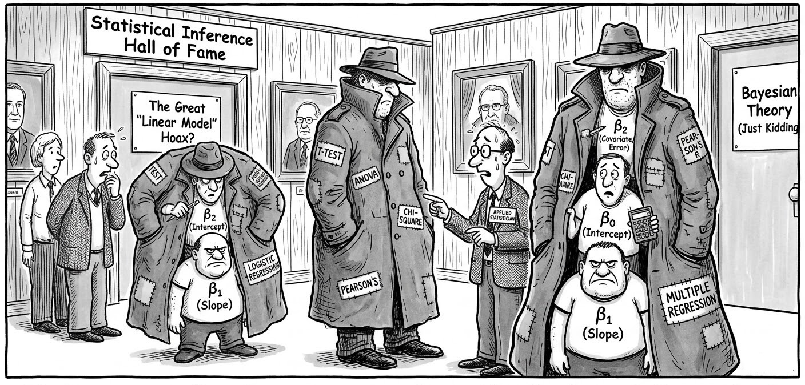
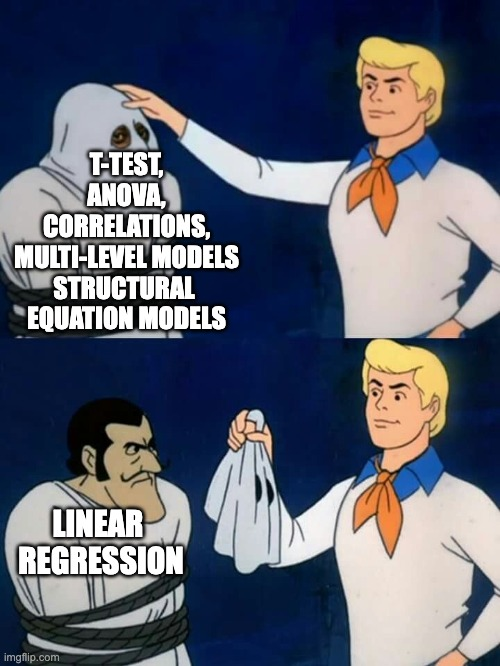

# dependencies
library(faux)
library(tibble)
library(dplyr)
library(parameters)
library(janitor)
library(effectsize)
library(forcats)
# simulate some cross sectional data
set.seed(43)
data_crosssectional <- faux::rnorm_multi(
n = 600,
vars = 2,
varnames = c("x", "y"),
mu = c(0, 0.5),
sd = 1,
r = 0.35
) 11 Everything is regression
Ok not everything. But a large proportion of the most commonly used statistical methods are just a linear regression model hiding in a trench coat.

This chapter uses the data simulation principles and skills you learned in the chapters in Part I to demonstrate this.
This chapter is heavily inspired by Jonas Lindeløv’s blog post ‘Common statistical tests are linear models (or: how to teach stats)’. We recommend you read his post in its entirety. We agree with Lindeløv that it might be better to frame much of our teaching of statistical inference around this insight, rather than introducing it very late in our training.
11.1 Many tests are just regression

11.1.1 Correlations are linear regression models
Correlations are just a linear regression model where the IV and DV have both been standardized by their sample Standard Deviations (i.e., score/SD).
Whereas the Beta coefficient from the linear regression model is interpreted as “a one-point increase in the IV is associated with a [Beta]-points change on the DV”, the Pearson’s r correlation merely modifies the units from the native scale to the number of Standard Deviations. I.e., “a one-SD increase in the IV is associated with a [Beta]-SD changes (aka r) on the DV”.
Note equivalent estimates (r = .36):
fit_named <- cor.test(formula = ~ y + x,
data = data_crosssectional,
method = "pearson")
model_parameters(fit_named)| Parameter1 | Parameter2 | r | CI | CI_low | CI_high | t | df_error | p | Method | Alternative |
|---|---|---|---|---|---|---|---|---|---|---|
| y | x | 0.36 | 0.95 | 0.29 | 0.43 | 9.43 | 598 | 0 | Pearson’s product-moment correlation | two.sided |
fit_lm <- lm(formula = scale(y) ~ 1 + scale(x),
data = data_crosssectional)
model_parameters(fit_lm)| Parameter | Coefficient | SE | CI | CI_low | CI_high | t | df_error | p |
|---|---|---|---|---|---|---|---|---|
| (Intercept) | 0.00 | 0.04 | 0.95 | -0.07 | 0.07 | 0.00 | 598 | 1 |
| scale(x) | 0.36 | 0.04 | 0.95 | 0.28 | 0.43 | 9.43 | 598 | 0 |
11.1.2 t-test are linear regression models
t-tests are just linear regression models where the IV - the group variable - has been dummy-coded, e.g., from control/intervention to 0/1.
Whereas the Beta coefficient from the linear regression model is interpreted as “a one-point increase in the IV is associated with a [Beta]-points change on the DV”, the t-test merely modifies this by treating “0” as one condition and “1” as the other. I.e., “a one-point increase in the IV, aka the difference between conditions, is associated with a [Beta]-points change (aka \(M_{diff}\)) on the DV”.
Note equivalent estimates of the difference in means (\(M_{diff}\) = 0.33) and p-values (p = .175).
fit_named <- t.test(formula = score ~ condition,
data = dat_experiment,
var.equal = TRUE)
model_parameters(fit_named)| Parameter | Group | Mean_Group1 | Mean_Group2 | Difference | CI | CI_low | CI_high | t | df_error | p | Method | Alternative |
|---|---|---|---|---|---|---|---|---|---|---|---|---|
| score | condition | 0.41 | 0.08 | 0.33 | 0.95 | -0.15 | 0.81 | 1.37 | 78 | 0.1749622 | Two Sample t-test | two.sided |
fit_lm <- lm(score ~ 1 + condition_numeric,
data = dat_experiment)
model_parameters(fit_lm)| Parameter | Coefficient | SE | CI | CI_low | CI_high | t | df_error | p |
|---|---|---|---|---|---|---|---|---|
| (Intercept) | 0.08 | 0.17 | 0.95 | -0.26 | 0.42 | 0.47 | 78 | 0.6414285 |
| condition_numeric | 0.33 | 0.24 | 0.95 | -0.15 | 0.81 | 1.37 | 78 | 0.1749622 |
11.1.3 Many non-parametric tests are just linear models with transformations
When the assumptions of parametric tests like t-tests and correlations fail, we are often recommended to use ‘non-parametric’ tests instead. Many of these are just linear models with rank transformations.
11.1.3.1 Spearman’s \(\rho\) correlations
Note equivalent estimates (\(\rho\) = .34):
fit_named <- cor.test(formula = ~ y + x,
data = data_crosssectional,
method = "spearman")
model_parameters(fit_named)| Parameter1 | Parameter2 | rho | S | p | Method | Alternative |
|---|---|---|---|---|---|---|
| y | x | 0.36 | 22946672 | 0 | Spearman’s rank correlation rho | two.sided |
fit_lm <- lm(formula = rank(y) ~ 1 + rank(x),
data = data_crosssectional)
model_parameters(fit_lm)| Parameter | Coefficient | SE | CI | CI_low | CI_high | t | df_error | p |
|---|---|---|---|---|---|---|---|---|
| (Intercept) | 191.54 | 13.22 | 0.95 | 165.58 | 217.50 | 14.49 | 598 | 0 |
| rank(x) | 0.36 | 0.04 | 0.95 | 0.29 | 0.44 | 9.51 | 598 | 0 |
11.1.3.2 Mann-Whitney U-test (aka Wilcoxon rank-sum test)
Note equivalent estimates of the difference in p-values (p = .183).
fit_named <- wilcox.test(formula = score ~ condition,
data = dat_experiment,
correct = FALSE) # without continuity correction
model_parameters(fit_named)| Parameter1 | Parameter2 | W | p | Method | Alternative |
|---|---|---|---|---|---|
| score | condition | 939 | 0.1836501 | Wilcoxon rank sum exact test | two.sided |
fit_lm <- lm(rank(score) ~ 1 + condition_numeric,
data = dat_experiment)
model_parameters(fit_lm)| Parameter | Coefficient | SE | CI | CI_low | CI_high | t | df_error | p |
|---|---|---|---|---|---|---|---|---|
| (Intercept) | 37.03 | 3.66 | 0.95 | 29.75 | 44.30 | 10.13 | 78 | 0.0000000 |
| condition_numeric | 6.95 | 5.17 | 0.95 | -3.34 | 17.24 | 1.34 | 78 | 0.1827338 |
11.1.4 Meta-analyses are linear regression models, and meta-analyses are multi-level models
Specifically, linear models that weight by the sample size (in much older studies) or the effect size’s variance (in modern meta analyses) so that larger studies with more precisely estimated effect sizes influence the meta-analysis estimate more. You can see in the forest plot below that the more precise estimates - those with narrower Confidence Intervals - have larger weights, represented by the larger squares. Psychology doesn’t use regression weightings in non-meta-analysis contexts very often, but perhaps we should (Alsalti, Hussey, Elson and Arslan, 2026).
The other main conceptual difference between meta-analyses and original analyses is that meta-analyses typically use the results of original studies as their data (i.e., effect size estimates), rather than the underlying original data itself. However, this is still something we can use the linear regression functions for, simply by supplying it with effect size estimates rather than participant-level data.
See this helpful blog post by Wolfgang Viechtbauer, the developer of the {metafor} package for meta-analysis, for more details of this underlying equivalence and the small implementation differences between R packages and methods.
Note equivalent estimates of the meta-analysis effect size (r = .13).
library(metafor)
data_meta <-
escalc(measure = "COR",
ri = ri,
ni = ni,
data = dat.molloy2014) %>% # use metafor's built-in dataset
select(authors,
year,
pearsons_r = yi,
pearsons_r_variance = vi)
# fit an equal-effects meta-analysis model
# these are less commonly recommended these days, but it illustrates the point
fit_meta <- rma(yi = pearsons_r,
vi = pearsons_r_variance,
data = data_meta,
method = "EE")
forest(fit_meta, slab = paste(authors, year))
# model_parameters(fit_meta) # optionally, print table to see that model_parameters() works with many different modelsfit_lm <- lm(pearsons_r ~ 1,
weights = 1/pearsons_r_variance,
data = data_meta)
model_parameters(fit_lm)| Parameter | Coefficient | SE | CI | CI_low | CI_high | t | df_error | p |
|---|---|---|---|---|---|---|---|---|
| (Intercept) | 0.13 | 0.03 | 0.95 | 0.07 | 0.19 | 4.78 | 15 | 0.000242 |
11.1.5 Confirmatory Factor Analysis is approximately a series of linear regression models
Confirmatory Factor Analysis (CFA) is often used to assess the measurement model of a scale: how strongly each item loads onto the latent factor that the scale is meant to measure. These factor loadings (\(\lambda\)) are closely related to the unstandardized Beta coefficients from a series of lm() calls, each predicting one item from the scale’s sum score.
Unlike the equivalences above, however, this one is approximate rather than exact. The reason is that each item is itself part of the sum score, so the sum score carries that item’s own measurement error. Regressing item \(i\) on the sum score \(S = \sum_j x_j\) gives:
\[ \beta_i = \frac{\operatorname{Cov}(x_i, S)}{\operatorname{Var}(S)} = \frac{\lambda_i \left(\sum_j \lambda_j\right) \psi \;+\; \theta_i}{\operatorname{Var}(S)} \]
where \(\psi\) is the factor variance and \(\theta_i\) is item \(i\)’s residual (error) variance. That \(\theta_i\) in the numerator is the item’s own error leaking in from the sum score. Because it is added rather than multiplied, \(\beta_i\) is not exactly proportional to \(\lambda_i\), so no amount of rescaling can remove it. This is a structural difference, not sampling error: it does not shrink as the sample size grows. In practice it is small, and both methods recover the population loadings well.
library(lavaan)
# the true item factor loadings (lambda) are 1, .8, 1.2, 0.9, and 1.1
population_model <- '
# factor loadings
F =~ 1.0*x1 + 0.8*x2 + 1.2*x3 + 0.9*x4 + 1.1*x5
# factor variance
F ~~ 1.5*F
# item residual (error) variances
x1 ~~ 0.5*x1
x2 ~~ 0.4*x2
x3 ~~ 0.6*x3
x4 ~~ 0.5*x4
x5 ~~ 0.5*x5
'
population_loadings <- c(1.0, 0.8, 1.2, 0.9, 1.1)
items <- c("x1", "x2", "x3", "x4", "x5")
set.seed(42)
data_scale <- simulateData(population_model, sample.nobs = 1000)Note the similar estimates of the factor loadings.
fit_named <- cfa('F =~ x1 + x2 + x3 + x4 + x5', data = data_scale)
cfa_loadings <- parameterEstimates(fit_named) |>
# the "=~" rows are the factor loadings
filter(op == "=~") |>
pull(est)
cfa_loadings[1] 1.0000000 0.8064040 1.2221318 0.9044008 1.1183654# the sum score across the scale's items
data_scale$sum_score <- rowSums(data_scale[, items])
# fit one model per item, predicting that item from the sum score, and extract its Beta.
# the same few lines are simply repeated for each item, so that each model is explicit
lm_betas <- c(
lm(x1 ~ sum_score, data = data_scale) |>
parameters() |>
filter(Parameter == "sum_score") |>
pull(Coefficient),
lm(x2 ~ sum_score, data = data_scale) |>
parameters() |>
filter(Parameter == "sum_score") |>
pull(Coefficient),
lm(x3 ~ sum_score, data = data_scale) |>
parameters() |>
filter(Parameter == "sum_score") |>
pull(Coefficient),
lm(x4 ~ sum_score, data = data_scale) |>
parameters() |>
filter(Parameter == "sum_score") |>
pull(Coefficient),
lm(x5 ~ sum_score, data = data_scale) |>
parameters() |>
filter(Parameter == "sum_score") |>
pull(Coefficient)
)
# CFA fixes the first loading to 1 to set the scale of the latent factor,
# so rescale the Betas by the first one to put them on the same footing
lm_loadings <- lm_betas / lm_betas[1]
lm_loadings[1] 1.0000000 0.8074707 1.2164166 0.9088765 1.1121752Both sets of estimates recover the population loadings closely:
tibble(item = items,
population_loading = population_loadings,
cfa_loading = cfa_loadings,
lm_loading = lm_loadings)| item | population_loading | cfa_loading | lm_loading |
|---|---|---|---|
| x1 | 1.0 | 1.00 | 1.00 |
| x2 | 0.8 | 0.81 | 0.81 |
| x3 | 1.2 | 1.22 | 1.22 |
| x4 | 0.9 | 0.90 | 0.91 |
| x5 | 1.1 | 1.12 | 1.11 |
But, as explained above, the two are not exactly equal, unlike the other equivalences in this chapter:
max(abs(cfa_loadings - lm_loadings))[1] 0.00619017411.1.6 Means and Standard Deviations are linear regression models
If we want to take this even further, we can see that other named ‘tests’ that are just linear regression models even includes ‘the sample mean’ and ‘the sample Standard Deviation’ of an intercept-only linear regression model.
An intercept-only linear regression model has no predictors, only the intercept. Eg., y ~ 1.
The sample mean is the estimate of the intercept of an intercept-only linear regression model.
The sample Standard Deviation is the estimate of the residual standard error of an intercept-only linear regression model.
Note the equivalent estimates.
fit_named <- dat_experiment |>
summarize(mean = mean(score),
sd = sd(score))
fit_named| mean | sd |
|---|---|
| 0.25 | 1.09 |
fit_lm <- lm(formula = score ~ 1,
data = dat_experiment)
model_parameters(fit_lm) | Parameter | Coefficient | SE | CI | CI_low | CI_high | t | df_error | p |
|---|---|---|---|---|---|---|---|---|
| (Intercept) | 0.25 | 0.12 | 0.95 | 0 | 0.49 | 2.02 | 79 | 0.0468864 |
sigma(fit_lm) # residual standard error[1] 1.08608211.2 Regression is just the slope of a line
11.2.1 Linking different notation types
Equation of a line as we are taught in school:
\[ y = m*x + c \]
Bridge from school notation to linear regression notation:
\[ \underbrace{y}_{\text{outcome}} = \underbrace{c}_{\beta_{\text{intercept}}} \cdot \underbrace{1}_{\text{intercept}} + \underbrace{m}_{\beta_{\text{slope}}} \cdot \underbrace{x}_{\text{predictor}} + \underbrace{\varepsilon}_{\text{error}} \]
The linear model notation:
\[ y = \beta_{\text{intercept}} \cdot 1 + \beta_{\text{slope}} \cdot x + \varepsilon \]
‘Wilkinson notation’ to specify and fit the regression in R:
fit <- lm(y ~ 1 + x,
data = dat)This asks R to estimate \(\beta_{\text{intercept}}\) for 1 (the intercept), \(\beta_{\text{slope}}\) for x, and the remaining error \(\varepsilon\).
We can then see those estimates, where ‘Coefficient’ refers to the Beta coefficients:
model_parameters(fit) | Parameter | Coefficient | SE | CI | CI_low | CI_high | t | df_error | p |
|---|---|---|---|---|---|---|---|---|
| (Intercept) | 3.5 | 0.21 | 0.95 | 3.10 | 3.91 | 16.91 | 598 | 0 |
| x | 0.2 | 0.01 | 0.95 | 0.18 | 0.22 | 17.26 | 598 | 0 |
However, because the above code doesn’t explicitly mention the Beta parameters, its connection to the formula can feel unclear. We think it can be helpful to see the same model specified in the {lavaan} package, which does let you explicitly name these parameters in the model.
library(lavaan)
fit <- lavaan::sem(model = 'y ~ beta_intercept * 1 + beta_slope * x',
data = dat)We can then see the estimates again. Note that because {lavaan} uses Maximum Likelihood estimation rather than Ordinary Least Squares estimation it will provide slightly different results - the point is just to see the connection between the formula and the model.
# nb model_parameters() doesn't return the intercept so extract it more manually
lavaan::parameterEstimates(fit) |>
filter(label %in% c("beta_intercept", "beta_slope")) %>%
select(label, beta = est, ci_low = ci.lower, ci_high = ci.upper, p = pvalue)| label | beta | ci_low | ci_high | p |
|---|---|---|---|---|
| beta_intercept | 3.5 | 3.10 | 3.91 | 0 |
| beta_slope | 0.2 | 0.18 | 0.22 | 0 |
11.2.2 Understanding regression as prediction
Beta estimates often feel highly abstract. We can understand them better in the context of the original linear regression formula, as a way to make predictions about new observations.
To do this, we simply use the regression formula and the estimates from the model. Insert the estimates for \(\beta_{\text{intercept}}\) and \(\beta_{\text{slope}}\) into the original regression equation.
Then, add a new value of \(x\) to represent a hypothetical new participant. Let’s imagine this participant has a depression score (\(x\)) of 25 on the BDI-II, representing moderate depression.
By multiplying the numbers, we find the participant’s predicted sleep score on the PSQI (\(y\)).
\[ \begin{aligned} y &= \beta_{\text{intercept}} \cdot 1 &+& \quad \beta_{\text{slope}} \cdot x \\ &= 3.5 \cdot 1 &+& \quad 0.2 \cdot 25 \\ &= 8.5 \end{aligned} \]
Predicted sleep quality is 8, where scores on the PSQI > 5 indicate poor sleep and clinical populations often score in the 8 to 14 range.
11.2.3 Linking the formula to Null Hypothesis Significance Testing (NHST)/p values
The association between depression and sleep quality is tested against the null hypothesis (\(H_0\)) that the association between \(x\) and \(y\) - ie \(\beta_{\text{slope}}\) - is zero. The alternative hypothesis (\(H_1\)) is therefore that the association is non-zero. Non-zero slope allows for the inference that depression is associated with poor sleep.
\[ H_0\!: \beta_{\text{slope}} = 0 \\ H_1\!: \beta_{\text{slope}} \neq 0 \]
Inferences regarding whether the slope is non-zero in the population rather than the sample are based on quantifying the uncertainty around the estimate of \(\beta_{\text{slope}}\), for example through Confidence Intervals and p-values. We won’t get into how that is done here; the point here is to link p-values (which you are likely more familiar with) to the slope of the line equation underlying linear regression (which are may be less familar with).
TipPractice testing the equivalence of named tests and linear regression
Note that while there are exercises related to this chapter, we suggest that you do not complete them until you have read all of Part 1 of the book (learning how to simulate).
Download and complete the exercises for this chapter.